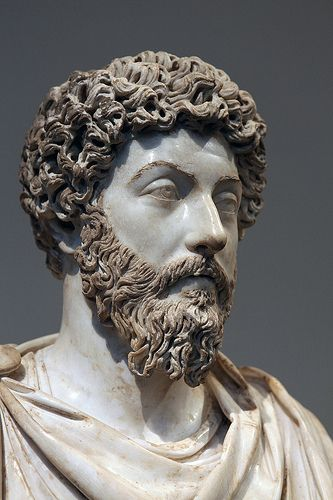
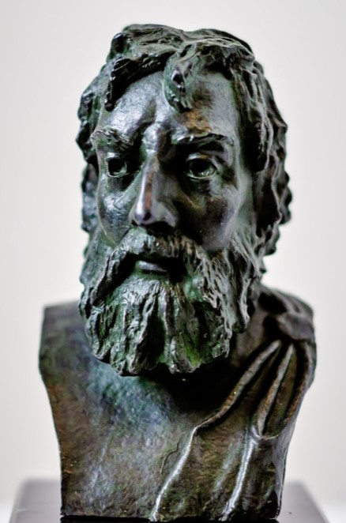
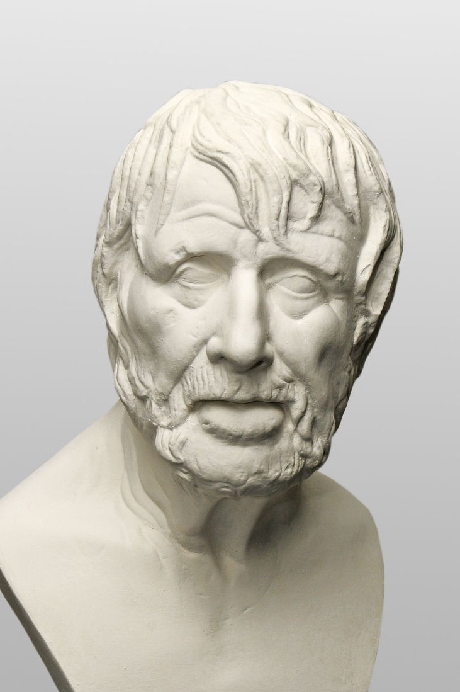

Stoic Figures
Influential Classical Stoics
Marcus Aurelius
The roman emperor embodied stoicism in his actions. His Meditations journal reflects his stoic principles and resilience. Despite being a powerful ruler, Marcus Aurelius heavily focused on maintaining humility and rational.
Epictetus
A former slave turned teacher, Epictetus emphasized personal discipline and self-control. His teachings focused on mastering our lives through reason and virtue. He is by far the most influential ancient stoic due to the preservation of his work.
Senaca
Seneca's letters and essays explore how to manage emotions and face adversity with courage. His work was rediscovered during the Renaissance Era, reviving the philosophy. Today his work continues to profoundly influence modern stoicism.
Influential Modern Stoics (hover/click)
Ryan Holiday
Ryan Holiday is the most influential modern stoic, translating Stoic ideas into practical advice. He has written 10 books and popularized many aspects of ancient stoism well known today. He currently has a massive following through "The Daily Stoic" platform.
Massimo Pigliucci
Massimo Pigliucci is a professor of philosophy at City College of New York. He is one of the leading voices behind the revival of Stoicism as a practical philosophy, especially within academic circles. In a sense Massimo serves as a bridge between the ancient texts and modern-day living
Donald J. Robertson
Donald J. Robertson is a psychotherapist and writer who has been a major figure in the modern Stoic movement. Notably, he integrated stoicism with cognitive-behavioral therapy (CBT). He has shown Stoicism isn't just intellectual - it's therapeutic.
Pierre Hadot
Pierre Hadot was a groundbreaking scholar who radically reshaped the way we perceive ancient philosophy. He emphasized that ancient philosophy wasn't just an abstract theory but actually a way of life. Many credit Pierre as the intellectual foundation of the Stoic revival.